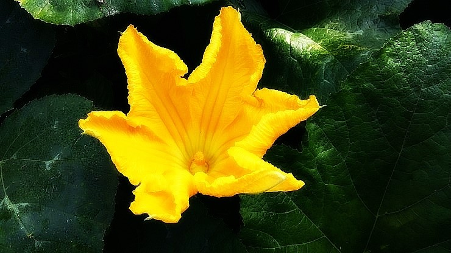

너무 화려하지 않으며 고귀한 느낌을 가지고 있다. 붉은 색이 단연 으뜸이며 한 송이만 있어도 빼어나다.

드물게 푸른색을 띠고 있으며 작지만 시원해 보이는 어린 꽃이라고 할 수 있다. 여럿이 함께 있을 때 더욱 아름답다.

색도 모양도 화려하며 이름과 걸맞지 않게 아름다운 꽃으로 매우 완숙한 이미지를 풍기는 꽃이다.

태양만 바라보는 일편단심의 꽃으로 얼굴이 큰 편에 속하며 송이가 적어야 제격이다.